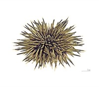

うに（雲丹）の漁獲量 都道府県ランキング
全23県の順位と、とれた量
うにが日本でいちばん多くとれるのは北海道です。3,861 tで、全国（6,262 t）の62%を占めます。

| 順位 | 都道府県 | 漁獲量 | 全国に占める割合 |
|---|---|---|---|
| 1位 | 北海道 | 3,861 t | 62% |
| 2位 | 岩手県 | 667 t | 11% |
| 3位 | 宮城県 | 475 t | 7.6% |
| 4位 | 青森県 | 378 t | 6.0% |
| 5位 | 山口県 | 150 t | 2.4% |
| 6位 | 鹿児島県 | 147 t | 2.3% |
| 7位 | 熊本県 | 136 t | 2.2% |
| 8位 | 福岡県 | 135 t | 2.2% |
| 9位 | 長崎県 | 105 t | 1.7% |
| 10位 | 愛媛県 | 69 t | 1.1% |
| 11位 | 大分県 | 39 t | 0.6% |
| 12位 | 兵庫県 | 24 t | 0.4% |
| 13位 | 佐賀県 | 15 t | 0.2% |
| 14位 | 宮崎県 | 14 t | 0.2% |
| 15位 | 島根県 | 12 t | 0.2% |
| 16位 | 高知県 | 9 t | 0.1% |
| 17位 | 茨城県 | 8 t | 0.1% |
| 18位 | 徳島県 | 5 t | 0.1% |
| 19位 | 鳥取県 | 4 t | 0.1% |
| 20位 | 福島県 | 3 t | 0.0% |
| 21位 | 和歌山県 | 3 t | 0.0% |
| 22位 | 三重県 | 1 t | 0.0% |
| 23位 | 京都府 | 1 t | 0.0% |
うにの漁獲量の推移（令和2年〜令和6年）
全国の漁獲量は、令和2年の6,650 tから令和6年の6,262 tへ、6%減りました。この間、1位はずっと北海道です。
| 年 | 全国 | 1位 | 2位 | 3位 |
|---|---|---|---|---|
| 令和6年 | 6,262 t | 北海道3,861 t | 岩手県667 t | 宮城県475 t |
| 令和5年 | 7,204 t | 北海道4,091 t | 岩手県1,289 t | 宮城県655 t |
| 令和4年 | 6,518 t | 北海道3,656 t | 岩手県999 t | 宮城県568 t |
| 令和3年 | 6,687 t | 北海道3,848 t | 岩手県888 t | 宮城県594 t |
| 令和2年 | 6,650 t | 北海道3,890 t | 岩手県715 t | 宮城県540 t |
この数字について
- 分類：雲丹の仲間
- 全国の漁獲量：6,262 t
- この数字が表すもの：漁獲量（海でとった重さ。養殖は含みません）
- 調査：海面漁業生産統計調査（海面漁業） 令和6年
- 23県分を調査（調査していない県は順位に入りません）
うにの漁獲量について、よくある質問
- うにの漁獲量が日本一の都道府県はどこですか？
- 北海道です。海面漁業生産統計調査（海面漁業）（令和6年）で3,861 tでした。
- うにの漁獲量ランキング2位・3位はどこですか？
- 2位は岩手県（667 t）、3位は宮城県（475 t）です。
- うにの漁獲量ランキング4位・5位はどこですか？
- 4位は青森県（378 t）、5位は山口県（150 t）です。うにの全23県の順位は上の表のとおりです。
- うにの全国の漁獲量はどれくらいですか？
- 6,262 t（令和6年）です。